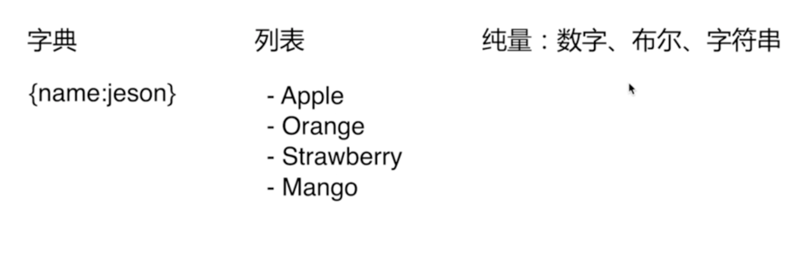
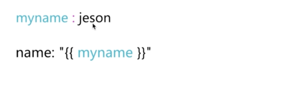

yaml文件配置和读取
什么是yaml#
- 是一种直观的能够被电脑识别的数据序列化格式，类似于xml
- 由于易于被解析，应用工程的工作成效读取的配置文件
python环境下使用yaml模块#
1-1 安装yaml模块#
pip install PyYAML
2-1 yaml文件配置#
配置格式要求：
大小写敏感
使用缩进表示层级关系（只能使用空格，不能使用tab）
yaml文件以 ‘---’作为文档的开始
支持的数据结构

yaml变量的应用

实例：
---
hostsinfo :
nets : ['192.168.1']
ports : "22,222,2222,22222,2222"
ssh_key_file : ['/opt/key/first_rsa','/opt/key/senncond_rsa','/opt/key/third_rsa']
syscmd_list : ["cat /etc/issue", "cat /etc/redhat-release"]
ansible_log :
adhoc_format :
10008 : "shell传入模块有问题！"
10000 : "任务已接收，准备检验中..."
10002 : "查找到匹配机器的登录信息,准备检查任务中.."
注意事项
- 编写yaml文件时，不要使用tab键进行空白符，要使用space[空格键]来实现空白符
3-1 读取yaml文件内容#
In [12]: import yaml In [13]: y = yaml.load(open('config.yaml')) In [14]: y Out[14]: {'test': {'apple': 'red', 'colors': ['red', 'yellow']}} In [15]: